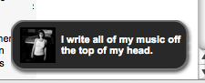
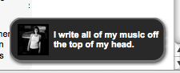
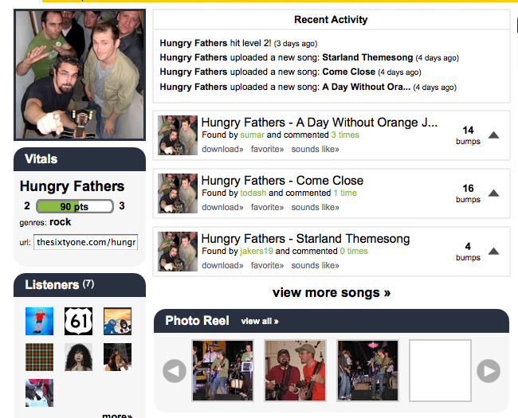

The sixtyone - a musical adventure
{kind=link}
The sixtyone is part music discovery site, part social music site, and part online game. On thesixtyone, you listen to music (almost all of it by artists you've never heard of). If you find something you like you can 'bump it' - (it's just like digging) - songs or artists that get bumped a lot hit the home page, where they get lots of visibility and lots of plays (just like Digg). Not only is getting to the front page highly rewarding for the artist, it also can be highly rewarding for you if you were an early 'bumper' of the track. That's because everything that you do on the site can earn you points. Visit the site every day, you get points. Listen to music from 'the rack' (the new bin), you get points, bump a song that then gets bumped by lots of others, you earn lots of points. Be the first person to bump a song that ultimately makes it to the front page - you get a boatload of points. As you earn points, you go up levels, just like D&D - and the higher your level, the more weight your opinion carries - higher level users can bump songs multiple times. You also get points for 'achievements' like 'disk jockey' if you attract lots of others to your 'radio station'.
 I've really just scratched the surface - there is lots to do at
thesixtyone - you can spend time looking for undiscovered gems, you can
listen to the music that is been bumped the most, you can explore the
'favorites' of other users, you can build playlists, you can

create your radio station, you can comment on tracks (the comments get
turned into little popups that sometimes appear when people listen to
the song) - it really does feel a bit like a D&D game - it is fun to
notified via a little popup that you've just received some points or
achieved some goal. And while you are doing this, you are listening to
music, of all sorts of genres. The music is mostly good to excellent
(with some clunkers too). And there are some big name artists - I've
listened to NiN, Bjork, Jonathan Coulton and Daft Punk on thesixtyone.
I've really just scratched the surface - there is lots to do at
thesixtyone - you can spend time looking for undiscovered gems, you can
listen to the music that is been bumped the most, you can explore the
'favorites' of other users, you can build playlists, you can

create your radio station, you can comment on tracks (the comments get
turned into little popups that sometimes appear when people listen to
the song) - it really does feel a bit like a D&D game - it is fun to
notified via a little popup that you've just received some points or
achieved some goal. And while you are doing this, you are listening to
music, of all sorts of genres. The music is mostly good to excellent
(with some clunkers too). And there are some big name artists - I've
listened to NiN, Bjork, Jonathan Coulton and Daft Punk on thesixtyone.
 thesixtyone developers have done a great job of making the site highly interactive. It is very highly polished, and is simply fun to use. The music player is integrated perfectly into the site, so no matter what you do, the music keeps on playing.
{kind=link}
thesixtyone is a fantastic place for new artists to get their music into the ears of listeners since listeners are rewarded for finding and bumping the newest music. My friend, Sten, uploaded some tracks for his band "Hungry Fathers" and within minutes their songs had been listened to by half-a-dozen listeners. That just doesn't happen on Myspace.
It has been a long while since I've been excited by a new music site. Most 'new' music sites are just variations on the Last.fm theme - ("Let's build a social community around music!") and there just isn't any need to do that anymore, Last.fm does it so well. But thesixtyone is really doing something different - they are making it easy, fun and rewarding to explore and discover new music.
The observant browser will notice that my link to thesixtyone includes me as a referrer - yes, I'll get thesixtyone points if you follow that link and register
It's true, the site is very well designed and appeals to both my love of leveling up and of uploading original, non-copyrighted material. The site "jump starts" the typical cold start problem, as mentioned in the post, by rewarding "early bumpers".
Interest did die out relatively quickly though. It would be nice to continue to reward low ranking music since our artistic quality alone doesn't seem to be carrying us.
Posted by Sten Anderson on October 01, 2008 at 12:06 AM EDT #
hey paul, i can't express how awesome it was to go through my usual rss run only to find a post about the love of my life, thesixtyone. i've been a fan of duke listens for a while now and really appreciate the unique angle you bring to music, software, and the web.
thanks again to anthony of the hype machine for the sweet shout out.
Posted by james miao on October 01, 2008 at 07:25 PM EDT #
Paul, I just jumped on last night for the first time and haven't really waded in, but this is REALLY fascinating - thanks for the tip!
Posted by Chris Dahlen on October 02, 2008 at 12:54 PM EDT #
Hey, Paul, great writeup! Stumbled across thesixtyone only a month ago, but am obsessed with it. It took a while to figure out what was happening, but to be able to "play" music discovery is a compelling way to discover new stuff.
Some recent thesixtyone converts and I have started a site to trade tips and talk bumps and favorites (and I've already learned stuff about how the site works that I always wondered about!). Join us if you'd like!
http://areasixtyone.ning.com
Posted by Ryan on October 02, 2008 at 05:13 PM EDT #